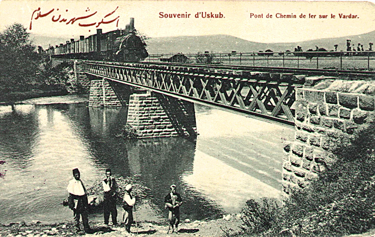

Üsküp 1916 - 1917 köprü
Balkan Savaşları'ndan belgeler
- Yıl
- 1916-1917
- Süre
- 00:13

Şehrin merkezinde, Vardar üzerinde anıtsal bir taş köprü (halk arasında Taş Köprü) duruyor. Bazı Türk kaynaklarına göre 15. yüzyılın ikinci yarısında Sultan II. Mehmed döneminde yapıldı. Köprünün 1990'daki yeniden yapımından elde edilen son araştırmalara göre ise 6. yüzyılda I. Justinianus döneminde yapıldığı düşünülüyor. İyi yontulmuş taş bloklardan yapılmıştır ve yapısı on üç yarım daire kemerle birbirine bağlanan güçlü ayaklara dayanır. 1905'te önceden tahtayla kaplı olan beton yaya yolları yapıldı. 1937'de konsollarla genişletildi ve yaya yolları bunların üzerine taşındı. Fotoğraf 19. yüzyılın sonunda Üsküp'ü gösteriyor: Taş Köprü ve yaşlı çınar. Sağ üstte kışlalarıyla Üsküp Kalesi.

Taş Köprü - 19. yüzyılın sonu. Arka planda solda Burmalı Camii görülüyor.

Taş Köprü - 19. yüzyılın sonu. Arka planda solda Burmalı Camii görülüyor.

19. yüzyılın sonu ve 20. yüzyılın başında Üsküp (yaz) - Taş Köprü'ye bakış. Ön planda posta kutulu bir telefon direği, hemen yanında kentsel hizmetlerin ilk biçimi olan bir sokak lambası. Yaz olduğu için yayalar güneşten şemsiyelerle korunuyor. Öküz arabaları mal taşıyor, faytonlar toplu taşıma olarak hizmet veriyordu. Köprünün hemen sağında büyük bir su dolabı var.

19. yüzyılın sonu ve 20. yüzyılın başında Üsküp (kış) - Taş Köprü'ye bakış. Ön planda posta kutulu bir telefon direği, hemen yanında kentsel hizmetlerin ilk biçimi olan bir sokak lambası. Sokaklar döşenmemiş ve çamurlu. Arka planda Yahudi mahallesi ve Üsküp Kalesi.

20. yüzyılın başında Taş Köprü'nün panoraması.

Taş Köprü - 1905 civarı. Arka planda sol üstte kışlalarıyla Üsküp Kalesi görülüyor. Sağda yaşlı çınar var.

19. yüzyılın sonu ve 20. yüzyılın başında Taş Köprü. Sağ üstte Üsküp Kalesi görülüyor.

Türk döneminde Üsküp - 20. yüzyılın başı. Fotoğrafta Taş Köprü'nün bir yarısında taş korkuluk, diğer yarısında demir ve ahşaptan geçici bir parmaklık olduğu görülüyor; 1905'te taş korkuluğun demirle değiştirilmesine başlandı. Sol köşede, Taş Köprü'nün arkasında Türk tiyatrosu. Köprünün hemen sağında büyük bir su dolabı. Sağda, 1689'da ayaklanması bastırıldıktan hemen sonra Karpoş'un cesedinin asıldığı yaşlı çınar. Arka planda Yahudi mahallesinin evleriyle Üsküp Kalesi'nin tamamı görülüyor. Fotoğrafın ön planında Vardar'ın temiz sularında bez ağartan kadınlar da ilginç.

Taş Köprü'de bir grup Türk - 20. yüzyılın başı. Köprünün kaldırımlarının tahtayla kaplı olduğu dikkat çekiyor.

Üsküp'te Vardar üzerindeki demiryolu köprüsü - 19. yüzyılın sonu.

Pčinja nehri üzerinde taş bir köprü - Üsküp yakınlarında (bugün mevcut değil). Köprünün tepesinde duran adama bakılırsa sudan yaklaşık 15 metre yüksekteydi. (1910'lar)

1902'de Üsküp. Fotoğrafta ahşap köprü, arkasında ilk tiyatro gösterilerinin yapıldığı eski "Boges" kahvehanesi görülüyor. Üzerinde askeri kışlalarıyla Üsküp Kalesi.

Taş Köprü - 1905. Solda, arkasında Türk tiyatrosu, üst kısımda Üsküp Kalesi görülüyor.

Yaşlı çınarın dalları arasından Vardar'ın sağ kıyısına bakış - 1910 civarı: Taş Köprü'nün bir bölümü, Burmalı Camii ve önündeki dükkânlar.

1912'den önce Üsküp. Konsollu ve demir korkuluklu Taş Köprü. Sağda yaşlı çınar, yukarıda Üsküp Kalesi görülüyor.

Balkan Savaşı sırasında Üsküp. Arka planda Burmalı Camii.

Taş Köprü'nün bir bölümünden Üsküp Kalesi'ne bakış (1910 civarı)

Taş Köprü'nün bir bölümü, arka planda solda Türk tiyatrosu. Üzerinde Üsküp Kalesi yükseliyor. (1910 civarı)

Üzerinde bir grup insanla Taş Köprü - 1913 civarı

Üsküp'te Vardar üzerindeki Taş Köprü - 1913 civarı

Üsküp'te Vardar üzerindeki Taş Köprü - 1913 civarı. Arka planda sağ üstte Üsküp Kalesi görülüyor.

1912'de Üsküp - bir resim. Taş Köprü ve Burmalı Camii, arkada güzel bir kavak yeşil kuşağıyla. Klasik mimari eklenmiş, yeni rıhtımlar yeni bir kentsel öğe. Köprünün önündeki konut, ticaret ve zanaat binaları grupları, geleneksel özellikler ve Avrupa etkisi öğeleriyle kompozisyonun parçası.

Üsküp'te Vardar üzerindeki Demir Köprü'den eski okula, Aziz Mina'ya ve Meryem Ana'ya bakış - 1920 civarı.

1905'te inşa edilen Demir Köprü. Arka planda ilk Üsküp Üniversitesi'nin binası. (1915)

1905'te inşa edilen Demir Köprü. Arka planda ilk Üsküp Üniversitesi'nin binası. (1920'ler.)

Üsküp'te Vardar üzerinde 1905'te yapılan Demir Köprü. Arka planda ilk Üsküp Üniversitesi'nin binası. (1920'ler)

1905'te inşa edilen Demir Köprü. (1920'ler)

Üsküp'te Vardar üzerindeki Demir Köprü ve "Dimitar Vlahov" rıhtımındaki binalar. (1920'ler)

Üsküp, 1920 civarı. Taş Köprü'nün önündeki şehir meydanının bir bölümü. Özellikle çatılarında kendine özgü mimari ayrıntılara sahip, gelip geçenler ve satış için ilk büfeler. Köprü yaya yollarıyla genişletilmiş. Yukarıda arka planda Üsküp Kalesi.

Üsküp, 1920 civarı. Taş Köprü'nün önündeki şehir meydanının bir bölümü. Taş Köprü'nün önünde ve üzerinde halka duyuru asmak için küçük yapılar. Köprü yaya yollarıyla genişletilmiş. Arka planda sol üstte Üsküp Kalesi.

Vardar'ın yükselen suyunu izleyen bir grup insanla Taş Köprü. (1920'ler)

Taş Köprü - 1920. Arka planda Osmanlı Bankası görülüyor.

Taş Köprü'den Eski Şehir'e ve Pajko mahallesine, diş hekimi Dr. Ruben'in muayenehanesine ve Osmanlı Bankası'na bakış - 1927 civarı.

Taş Köprü'den Eski Şehir'e, çarşıya ve Gazi Baba tepesine bakış. Köprünün hemen yanında, sağda diş hekimi Dr. Ruben'in muayenehanesi, biraz daha sağda Osmanlı Bankası vardı. Aralarında fayton duraklı küçük bir meydan, meydanın ortasında da Balkan Savaşı'nda düşenlerin anıtı vardı - 1927 civarı.

Taş Köprü'den Eski Şehir'e, çarşıya ve Gazi Baba tepesine bakış. Köprünün hemen yanında, sağda diş hekimi Dr. Ruben'in muayenehanesi, biraz daha sağda Osmanlı Bankası vardı. Aralarında fayton duraklı küçük bir meydan, meydanın ortasında da düşen savaşçılar anıtı vardı - 1927 civarı.

Taş Köprü'den Eski Şehir'e ve Pajko mahallesine, diş hekimi Dr. Ruben'in muayenehanesine ve Osmanlı Bankası'na bakış - 1927 civarı.

Köprünün bir bölümü ve Subaylar Evi ile Vardar'ın sağ kıyısına bakış - 1930'lar. Solda, ayaklanma bastırıldıktan sonra 1689'da Karpoş'un cesedinin asıldığı, kesilmiş yaşlı çınardan kalanlar.

Taş Köprü'nün bir bölümü, yaşlı çınar ve Üsküp Kalesi'nin görünümü - 1920 civarı.

Üsküp, 1920 civarı. Arka planda Üsküp Kalesi ile Taş Köprü. Ön planda Vardar'ın temiz suyunda bez ağartılıyor.

Küçük ahşap köprüye ve Vardar'ın sağ kıyısındaki rıhtıma bakış. Binalarda neoklasik ve Barok ayrıntılar var. Cadde bugünkü "Ilindenska". Binalar arasında Orta Müzik Okulu var. Ön planda Milli Tiyatro'ya giden küçük ahşap köprü.

Vardar üzerindeki küçük ahşap köprü, arka planda Subaylar Evi. Yanında banka ve eski postane - 1920'lerin sonu.

Vardar üzerindeki küçük ahşap köprü, arka planda Subaylar Evi, eski postane ve banka - 1930 civarı.

Kışlasıyla Üsküp Kalesi'ne bakış. Altında Yahudi mahallesi var. Ön planda küçük ahşap köprü - 1950'ler.

Milli Tiyatro'ya ve küçük ahşap köprüye bakış - 1930'lar.

Taş Köprü - 1930'lar. Arka planda Milli Tiyatro, üzerinde Üsküp Kalesi.

Meydanın bir bölümüne ve Taş Köprü'ye bakış. Arka planda solda Milli Tiyatro ve Üsküp Kalesi. Kentlilerin başlıca ulaşım aracı olan faytona dikkat edin. Ön planda Milli Banka'ya yer açmak için yıkılan binalar - 1930 civarı.

Vardar'ın yükselen suyu. Köprü yarıya kadar su altında. Fotoğraf sağ kıyıdan sol kıyıya doğru çekildi - 1930'lar.

Taş Köprü'nün yeniden yapımı ve kaldırımının değiştirilmesi. Ristić Sarayı ve ilk büfeler - 1930'lar civarı.

Taş Köprü'den meydana bakış. Solda Milli Banka'nın inşası için alan temizleniyor - 1930'lar.

Vardar'ın sol kıyısından Taş Köprü'ye ve Subaylar Evi'ne bakış - 1930'lar.

Vardar üzerindeki Taş Köprü - 1930 civarı. Arka planda Milli Tiyatro, sağ üstte Üsküp Kalesi görülüyor.

Taş Köprü - 1950'ler.

Taş Köprü'nün bir bölümü. Arka planda "Grand" oteli görülüyor. - 1960'lar

1960'larda, rıhtım düzenlenmeden önce, Üsküp Kalesi ile Taş Köprü.

Taş Köprü ve Üsküp Kalesi'nin görünümü. (1970'ler)

1970'lerde rıhtımın orta kısmıyla Taş Köprü.

1970'lerde Taş Köprü ve meydan.

Vardar'ın sağ kıyısından sol kıyısına, Taş Köprü'ye, meydanın bir bölümüne ve arka plandaki yeni postaneye bakış. (1970'ler)

Üsküp Kalesi'nden fotoğraflanan bugünkü "Goce Delčev" köprüsü. (1990'lar)

Balkan Savaşları'ndan belgeler
 Su kemeri4 kartpostal
Su kemeri4 kartpostal Kale30 kartpostal
Kale30 kartpostal Köprüler60 kartpostal
Köprüler60 kartpostal Rıhtım58 kartpostal
Rıhtım58 kartpostal Meydan46 kartpostal
Meydan46 kartpostal Binalar66 kartpostal
Binalar66 kartpostal Hristiyan kiliseleri19 kartpostal
Hristiyan kiliseleri19 kartpostal İslami yapılar33 kartpostal
İslami yapılar33 kartpostal Subaylar Evi29 kartpostal
Subaylar Evi29 kartpostal Tiyatro28 kartpostal
Tiyatro28 kartpostal Tren garı13 kartpostal
Tren garı13 kartpostal Okullar36 kartpostal
Okullar36 kartpostal Parklar12 kartpostal
Parklar12 kartpostal Pazarlar18 kartpostal
Pazarlar18 kartpostal Sokaklar38 kartpostal
Sokaklar38 kartpostal Panorama I60 kartpostal
Panorama I60 kartpostal Panorama II30 kartpostal
Panorama II30 kartpostal Kolajlar55 kartpostal
Kolajlar55 kartpostal Seller9 kartpostal
Seller9 kartpostal Deprem27 kartpostal
Deprem27 kartpostal Üsküp 200026 kartpostal
Üsküp 200026 kartpostal